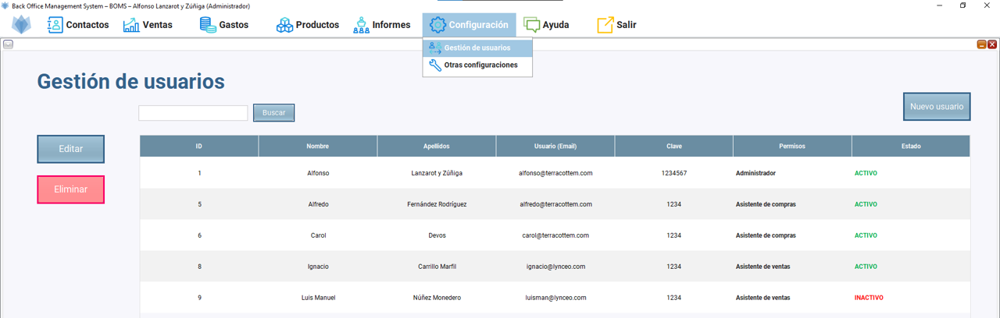
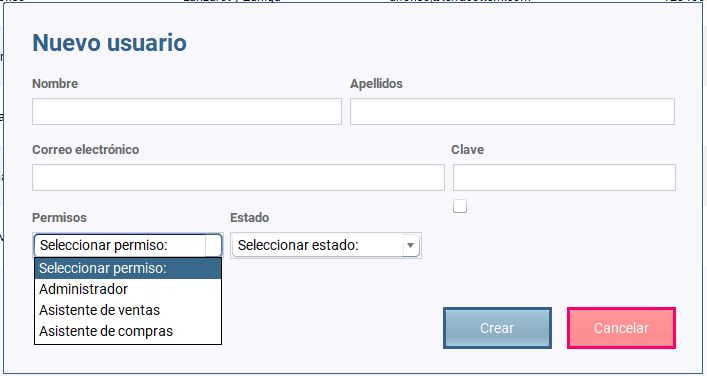
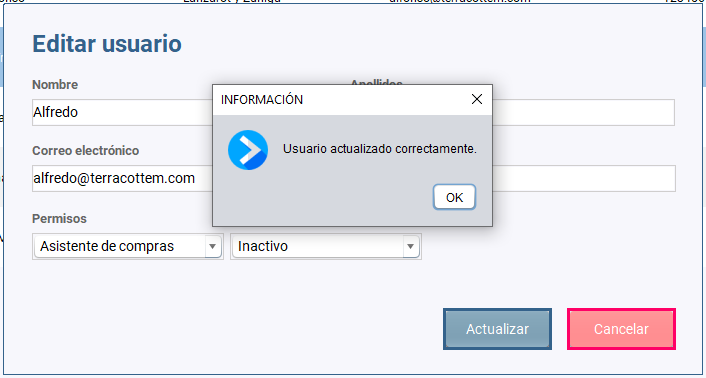
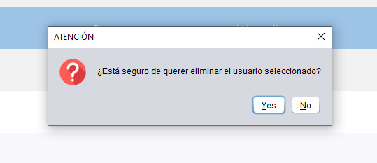
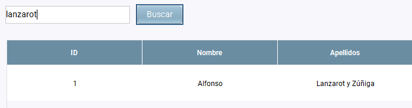

Una vez que hacemos clic en Configuración/Gestión de usuarios se abre el escritorio de gestión de usuarios.
Podemos observar una tabla con todos los usuarios creados activos e inactivos y tres botones: uno para añadir más usuarios, uno para editarlos y otro para eliminarlos.

El botón "NUEVO USUARIO" hace que se abra un diálogo en el que insertaremos la información relevante del usuario. Es necesario añadir toda la información.
Podemos observar que el diálogo muestra un combo box para seleccionar el tipo de rol o permiso y otro para indicar si está activo o inactivo.
Hay tres roles:

El botón "EDITAR" hace que se abra un diálogo en el que podremos modificar lo que sea necesario del usuario como darle otro permiso o rol y activarlo desactivarlo.
Para ello antes es necesario seleccionar la fila en la que se encuentra el producto o servicio que queremos editar.

El botón "ELIMINAR" hace que se elimine el usuario seleccionado de la tabla previa advertencia de seguridad por si finalmente no queremos hacerlo.
Para ello antes es necesario seleccionar la fila en la que se encuentra el usuario que queremos eliminar

El botón "BUSCAR" nos permite buscar los usuarios que están en la base de datos. La búsqueda podemos hacerla:
Únicamente es necesario introducir algunos caracteres y pulsar en el botón "BUSCAR" para que lo encuentre sin problemas.
